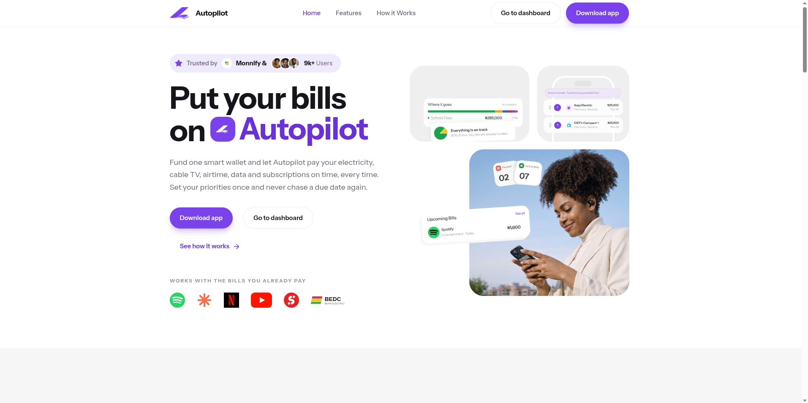

Autopilot
Fintech / Mobile + Web
Nigerian bill-payment app that puts recurring bills on autopilot
Fund one smart Monnify wallet and Autopilot automatically pays electricity, cable TV, airtime, data, and subscriptions on time—every time. Priority ranking ensures the most important bills clear first when funds are limited, with receipts after each payment. Trusted by Monnify and 9k+ users.
- Smart wallet with a dedicated Monnify reserved account—fund anytime and balances update instantly.
- Auto-pay engine with amount, due date, and priority per bill; highest-priority payments clear first when money is tight.
- Biometric security (Face ID / fingerprint) plus transaction PIN, with bank-grade protection on Monnify rails and encrypted storage.